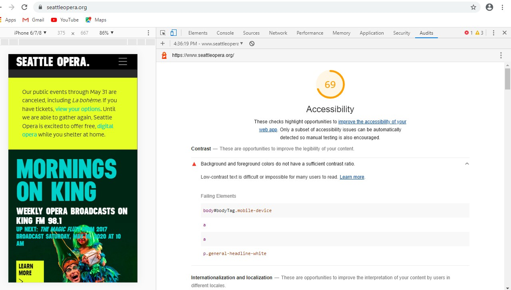

Impressions: Seattle Opera
This is my first attempt at accessibility testing of The Seattle Opera Website. The website is designed to be a gallery of services, resources, news and events at the Seattle Opera, another of the Emerald City's great commons. With this in mind, I conducted this accessibility audit with the guidance of The Essential Components of Web Accessibility (a product of the W3C Web Accessibility Initiative). I also benefitted from the use of free online developer tools, including the Google Lighthouse Accessibility Audit tool, and the "WAVE" Web Accessibility Evaluation Tool.
The Seattle Opera Website - Accessibility Audit
 Seattle Opera Website Overall Accessibility Score of 69, according to Lighthouse.I first downloaded the Google Lighthouse Accessibility Audit:Download Lighthouse Audit of Seattle Opera Seattle Opera Website Google Lighthouse Accessibility Audit
Google Lighthouse Accessibility Audit findings:
- Background and foreground colors do not have a sufficient contrast ratio. Low-contrast text is difficult or impossible for many users to read.
- Html elements does not have a [lang] attribute. If a page doesn't specify a lang attribute, a screen reader assumes that the page is in the default language that the user chose when setting up the screen reader. If the page isn't actually in the default language, then the screen reader might not announce the page's text correctly.
- Image elements do not have [alt] attributes. Informative elements should aim for short, descriptive alternate text. Decorative elements can be ignored with an empty alt attribute.
 Seattle Opera Website riddled with images without
descriptive alternate text.
Seattle Opera Website riddled with images without
descriptive alternate text.
"WAVE" Web Accessibility Evaluation Audit:
 Seattle Opera Website Overall Accessibility Audit - WAVE.
Seattle Opera Website Overall Accessibility Audit - WAVE.
- At least 13 instances of missing alternative text.
- No declaration of language (leaving it to a default...problematic for autoreaders).
- Low contrast between text and background images
- Too much similarity between text and links
I have to note, the WAVE tool was my favorite to use, particularly because it allowed me to see the site and use the icons to identify opportunity, while choosing between a code viewer or the web user interface
Observations and Recommendations
The ease of use and efficiency of these tools allow for regular audit and improvement. After declaring a language and finding a color scheme that allows for more contrast between text and background color, I would recommend entering alt text and image descriptions for all images displayed. There were additional tests that I'd recommend running, including the focus test to better accomodate users who depend solely on the keyboard for navigating around the website.